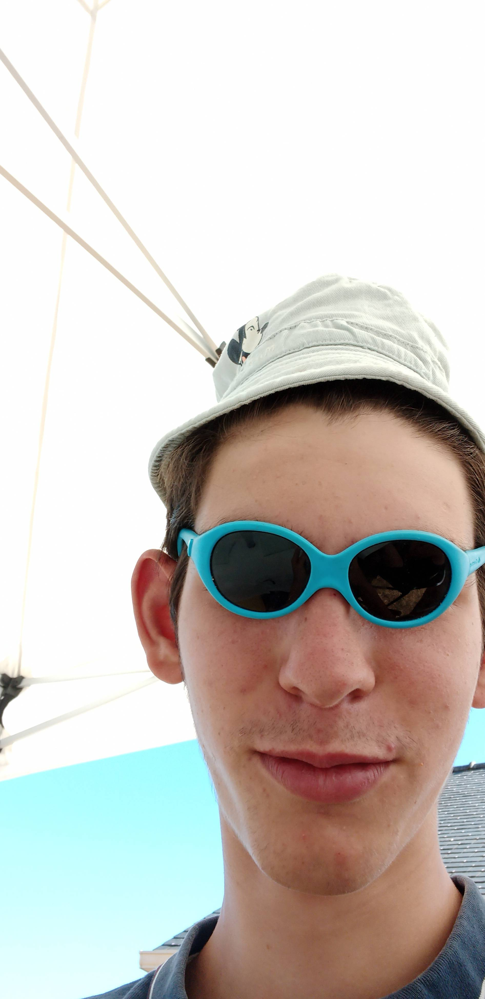

L'équipe
Neo Skull King a été développé, du début à la fin, par une équipe de deux personnes.

Né un 16 octobre dans la charmante petite bourgade de Château-Gontier dans la Mayenne, Armeloooooo (avec six « o », attention, c'est important) ou de son vrai nom Armel est un grand fan de pâtes, de CS, et éternel deuxième sur Cookie Clicker, en même temps il a commencé 2 minutes en retard... Main Scout sur Inferno et partisan de la méta homing sur Slay.one, il est particulièrement doué pour produire un code qui fonctionne rapidement - certes - mais QU'IL NE COMMENTE ET N'AERES JAMAIS.......... Sur Neo Skull King, il est responsable de plusieurs fonctions clé du jeu comme le calcul des points, le système de pari et tout le fonctionnement de la partie graphique, il a aussi corrigé bon nombre de bugs critiques et porté le projet jusqu'où il est aujourd'hui.
Melooneur, également nommé Théo Cuzin, quant à lui, n'aime pas spécialement les pâtes. Malgré le fait que je ne sais plus d'où il vient exactement, je peux affirmer qu'il vient du Sud, et que, par tous les chemins, il y retournera. Fan de tacos et de Factorio, cet énergumène peut en effet aussi bien optimiser une usine afin d'obtenir plus de circuits que manger son meilleur tacos XXL avec ses ami(e)s. Malgré tout, faites attention ! Si vous partez en SoloQ sur Valorant (n'y allez pas, venez sur CS), vous risquez de tomber dans sa team 100 % toxique. Malgré tout, cet hurluberlu reste le cerveau principal de ce projet : organisation, gestion du GitHub ainsi que la mise en place du réseau ! Je tiens également à dire qu'il a refait toutes les images présentes dans notre jeu (il n'aimait pas les miennes, malheureusement, et il critiquait aussi la disposition des cartes: "faut mettre les chiffres au milieu, mais nan là ils sont pas bien, change-les, en plus gros, en plus petit, où est le contour ?"). Mais il a aussi passé une journée entière à installer SFML sous Windows (alors qu'il avait juste à passer sous Linux, haha). Maintenant, que dire de son code ? Il fait des fonctions avec des noms éponymes, mais il n'arrive pas à choisir entre l'anglais et le français… donc il fait les deux ! “mancheOnline”. Présent lorsque des bugs se présentent, on raconte même qu'il aurait corrigé des bugs jusqu'à 4h du matin !! Enfin, il est l’heureux créateur de ce magnifique site, ainsi que de tous les textes, tous aussi intéressants et immersifs les uns que les autres !